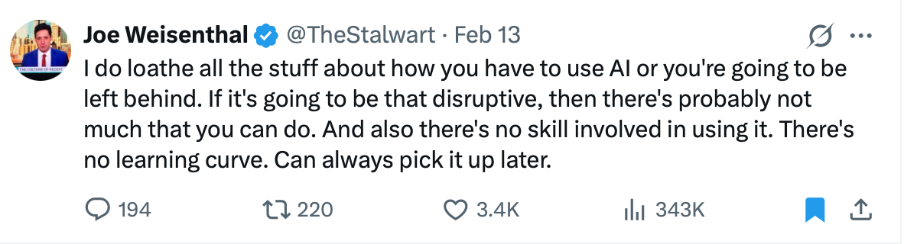
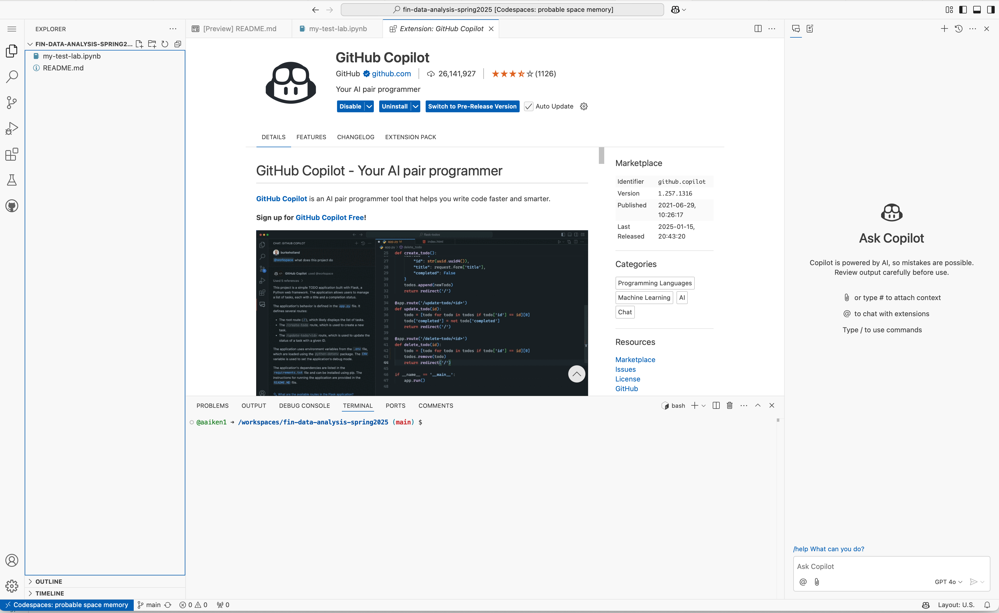
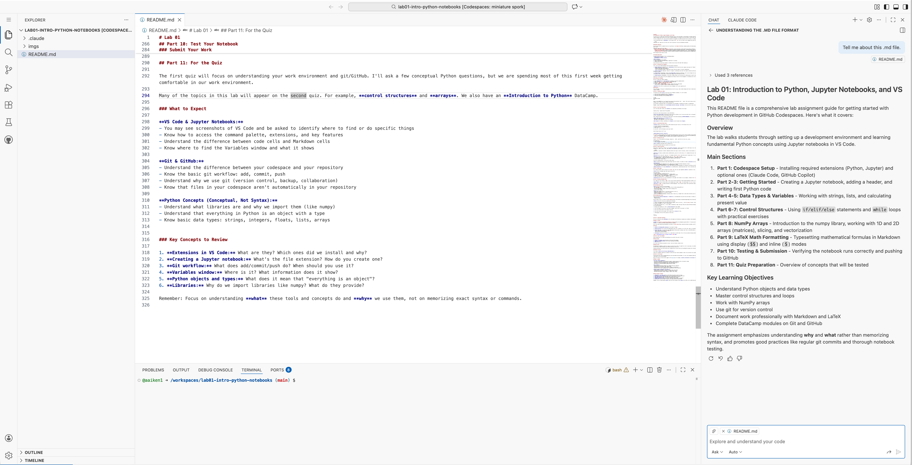
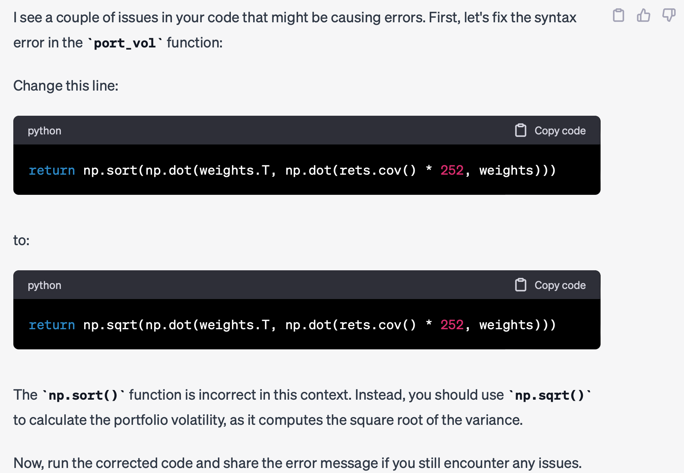

AI Coding Assistants#

Fig. 28 There’s no learning curve. You can always pick it up later. (Spoiler: there is a learning curve. Start now.)#
The best way to learn AI tools is to use them. Don’t wait for training. Don’t wait for the perfect tutorial. Just start experimenting. The tools are changing so fast that any formal training will be outdated by the time you finish it. The people who are getting the most value from AI coding assistants are the ones who dove in early and learned by doing.
The State of AI Coding in 2026#
The world of AI-assisted coding is changing fast. Three recent pieces capture where we are:
LLMs Are Now Undeniably Good at Code#
Simon Willison, a respected voice in the developer community, made this prediction for 2026: “It will become undeniable that LLMs write good code.” He notes that his own hand-written code has dropped to a “single digit percentage” of his total output since late 2025.
https://simonwillison.net/2026/Jan/8/llm-predictions-for-2026/
What does this mean for you? The skills that matter are shifting:
Syntax memorization → less important (AI handles this)
Problem specification → more important (telling AI what to build)
Architectural thinking → more important (how pieces fit together)
Critical evaluation → essential (knowing when output is wrong)
Willison argues that “the job of being paid money to type code” will disappear, but software engineering demands “enormous skill, experience and depth of understanding.” The typing was never the hard part.
The Danger: Cognitive Debt#
But there’s a risk. Margaret-Anne Storey introduces the concept of cognitive debt—the erosion of shared understanding about what software does and how it works.
https://margaretstorey.com/blog/2026/02/09/cognitive-debt/
Unlike technical debt (messy code you’ll clean up later), cognitive debt lives in your head. When AI generates code faster than you can understand it, you accumulate cognitive debt. Storey describes a student team that hit a wall mid-semester: they had working code but couldn’t explain their own architectural choices. They were paralyzed.
Her key insight: “Velocity without understanding is not sustainable.”
AI Doesn’t Reduce Work—It Intensifies It#
Research from Harvard Business Review confirms another counterintuitive finding: AI tools don’t lighten workloads—they amplify them.
https://hbr.org/2026/02/ai-doesnt-reduce-work-it-intensifies-it
An eight-month study found that workers voluntarily expanded their responsibilities because AI made “doing more” feel achievable. Designers started coding. Researchers started engineering. The conversational nature of AI prompting blurred boundaries—work slipped into breaks and evenings without people noticing. As one engineer put it: “You don’t work less. You just work the same amount or even more.”
The risk isn’t just burnout. It’s cognitive overload masked by feelings of productivity.
Warning
When using Claude Code or Copilot, resist the temptation to just accept working code. Ask yourself: Do I understand why this works? Could I explain it to someone else? If not, slow down.
What This Means for Finance and Analytics#
These trends hit data science and analytics particularly hard:
Basic analysis in Python or Excel? Everyone can do that now.
Building a DCF model or running a regression? AI handles the syntax.
The comparative advantage is in knowing what questions to ask, what the output means, and how to communicate it.
The workflow now is a back-and-forth conversation with tools like Claude Code. You’re not just writing code—you’re monitoring the process, steering the direction, catching mistakes before they compound.
Think of it as managing a “garden of forking paths.” At every step in an analysis, you could go in many directions. Which variables to include? Which model to use? How to handle missing data? AI makes it trivially easy to explore any path—but that means you need even stronger judgment about which paths to explore and when to stop. The freedom is exhilarating but also dangerous. You can wander far down the wrong path very quickly.
This class is about developing that judgment—not just getting code to run.
This is a coding class. And a data analysis class. AI tools are freeing us, though. Different skills are increasing in relative importance. Project management, data engineering, domain expertise, and communication skills are key, while the AI writes the code.
However, I still think you need to be able to understand the code and, especially, the process. This is about developing taste. Can you lead the AI tools down the correct paths? Can you connect all of the tools? Does the output answer the right question? Can you convince someone else that you’ve arrived at the right answer?
Rapidly Changing Coding World#
In this class, we’ll use several tools that can:
Generate code from natural language descriptions
Explain existing code line by line
Find and fix bugs
Suggest completions as you type
Help you learn new libraries and techniques
Note
Think of AI assistants as very fast junior programmers. They can handle routine tasks quickly, but you’re still the one who needs to understand the problem, evaluate the solution, and know when something is wrong. The more you understand about coding and finance, the more effectively you can direct these tools.
This is a great discussion on how to use LLMs for coding: https://simonwillison.net/2025/Mar/11/using-llms-for-code/. The key insight:
My current favorite mental model is to think of them as an over-confident pair programming assistant who’s lightning fast at looking things up, can churn out relevant examples at a moment’s notice and can execute on tedious tasks without complaint. — Simon Willison
Be precise. Tell them exactly what you want. But be careful — they are overconfident and “think” they are right. They also “want” to please you, which means they’ll sometimes make things up rather than admit they don’t know.
That said, that quote is from March of 2025. Claude Code and other agentic tools have changed things even more: https://claude.com/blog/introduction-to-agentic-coding
Anthropic Courses on Claude#
Learning how to use agentic AI tools might be the most important thing you can spend your time on right now. Anthropic has a number of free courses that you can do.
Bloomberg Odd Lots on Claude Code#
Want to learn more about how professionals are using Claude Code? Check out this Bloomberg Odd Lots podcast episode:
Bloomberg Odd Lots: Why The Tech World is Crazy for Claude Code
Warning
Remember, everyone has these tools now. So, there’s no comparative advantage in just being able to basic analysis in Python or Excel. Everyone can make a DCF model or run a regression. We have to be better. It’s about putting all of the pieces together.
The Tools We’ll Use#
In this course, you have access to three powerful AI coding assistants:
Tool |
Where |
Best For |
|---|---|---|
GitHub Copilot |
Inside Codespaces |
Autocomplete, inline suggestions, quick edits |
Claude (browser) |
claude.ai |
Longer conversations, explaining concepts, planning |
Claude Code |
Desktop app |
Complex projects, file editing, running commands |
Before diving into each tool, it’s important to understand that these tools work in fundamentally different ways.
Two Styles of AI Coding Help#
AI coding assistants come in two main flavors: autocomplete and agentic. Understanding the difference will help you choose the right tool for each task.
Autocomplete Style (GitHub Copilot)#
Autocomplete AI works like a very smart predictive text. As you type, it suggests what might come next:
You’re in control: You’re writing the code, AI just offers suggestions
Line-by-line: Suggestions appear as you type, one chunk at a time
Accept or ignore: Press Tab to accept, keep typing to ignore
Context-aware: It reads your current file to make relevant suggestions
Fast and lightweight: Suggestions appear in milliseconds
Think of it like autocomplete on your phone, but for code. You’re still driving — the AI is just finishing your sentences.
You type: def calculate_sharpe
Copilot suggests: _ratio(returns, risk_free_rate=0.02):
You press Tab → suggestion is inserted
Best for: Writing code when you know what you want, filling in boilerplate, staying in flow.
Agentic Style (Claude Code)#
Agentic AI is fundamentally different. Instead of suggesting completions, it takes actions on your behalf:
AI takes the wheel: You describe what you want, AI figures out how to do it
Multi-step tasks: AI can plan, execute, check results, and iterate
Reads and writes files: Can navigate your entire project, not just the current file
Runs commands: Can execute code, run tests, install packages
You supervise: AI proposes changes, you approve or reject them
Think of it like having a junior developer working alongside you. You give them a task (“add error handling to this function”), they go do it, and come back with proposed changes for you to review.
You say: "Add a function to calculate maximum drawdown to portfolio.py"
Claude: [Reads file] [Writes new function] [Shows you the diff]
"Here's what I'd like to add. Want me to save this?"
You: "Yes" → file is updated
Best for: Complex tasks, multi-file changes, refactoring, learning a new codebase, building features from scratch.
Side-by-Side Comparison#
Aspect |
Autocomplete (Copilot) |
Agentic (Claude Code) |
|---|---|---|
Who’s typing? |
You |
AI |
Scope |
Current line/function |
Entire project |
Speed |
Instant suggestions |
Takes time to think |
Control |
You decide every keystroke |
You approve/reject changes |
File access |
Current file only |
All files in project |
Can run code? |
No |
Yes |
Best analogy |
Smart autocomplete |
Junior developer |
When to Use Which#
Use autocomplete (Copilot) when:
You’re actively coding and want to stay in flow
You know roughly what you want to write
You’re working on a single file
You want quick syntax help
Use agentic (Claude Code) when:
You have a larger task to accomplish
Changes span multiple files
You want AI to figure out the approach
You’re learning how existing code works
You want to automate tedious refactoring
In practice, you’ll often use both. Copilot keeps you productive while writing code; Claude Code handles the bigger tasks where you’d rather describe what you want than write every line yourself.
Let’s look at each tool in detail.
GitHub Copilot in Codespaces#
GitHub Copilot is built directly into VS Code and Codespaces. As a student with GitHub Education, you get free access.
Setting Up Copilot#
Make sure you’ve joined GitHub Education for Students
In your Codespace, go to Extensions (left sidebar)
Search for “GitHub Copilot” and install it
You may need to sign in and authorize the extension
You can read more here: https://docs.github.com/en/codespaces/reference/using-github-copilot-in-github-codespaces and https://docs.github.com/en/copilot/how-tos/chat-with-copilot/chat-in-ide

Fig. 29 Installing Copilot in your Codespace.#
How Copilot Works#
Copilot provides inline suggestions as you type. It reads your code, your comments, and the context of your file to predict what you want to write next.
Example: Type a comment describing what you want, and Copilot will suggest the code:
# Calculate the Sharpe ratio for a portfolio
# Copilot will suggest something like:
def sharpe_ratio(returns, risk_free_rate=0.02):
excess_returns = returns - risk_free_rate / 252
return np.sqrt(252) * excess_returns.mean() / excess_returns.std()
Copilot Keyboard Shortcuts#
Action |
Mac |
Windows |
|---|---|---|
Accept suggestion |
|
|
Dismiss suggestion |
|
|
See next suggestion |
|
|
See previous suggestion |
|
|
Trigger suggestion |
|
|
Copilot Chat#
Copilot also includes a chat interface directly in VS Code. Click the Copilot icon in the sidebar (or use Cmd+Shift+I / Ctrl+Shift+I) to open it.
With Copilot Chat, you can:
Ask questions about your code: “What does this function do?”
Request changes: “Refactor this to use list comprehension”
Debug errors: “Why am I getting this KeyError?”
Generate tests: “Write unit tests for this function”

Fig. 30 Installing Copilot in your Codespace.#
Tips for Using Copilot#
Write clear comments first — Copilot uses your comments to understand intent
Be specific about variable names — Use descriptive names like
portfolio_returnsnotxReview every suggestion — Copilot makes mistakes, especially with finance-specific logic
Use it for boilerplate — Great for imports, setup code, and repetitive patterns
Claude in Codespaces (Browser)#
Claude is Anthropic’s AI assistant. You can use it in a browser tab alongside your Codespace for longer conversations and more complex explanations.
When to Use Claude (Browser)#
Claude in the browser is best for:
Learning concepts: “Explain what a covariance matrix is and why it matters for portfolio optimization”
Planning your approach: “I need to analyze 10 years of stock returns and find the optimal portfolio. What steps should I take?”
Debugging complex issues: Paste your code and error message for detailed help
Understanding documentation: “Explain how the
scipy.optimize.minimizefunction works”
Example Workflow#
Open claude.ai in a browser tab
Describe your task or paste your code
Copy Claude’s suggestions back into your Codespace
Test and iterate
Writing Good Prompts for Claude#
The better your prompt, the better the response. Include:
Context: What are you trying to accomplish?
Specifics: What data do you have? What format?
Constraints: Are there requirements or limitations?
Examples: Show sample input/output if helpful
Weak prompt:
How do I calculate returns?
Strong prompt:
I have a pandas DataFrame called
priceswith daily closing prices for 5 stocks. The index is dates and the columns are ticker symbols. How do I calculate daily percentage returns and then annualized mean returns for each stock?
Conversations, Not Commands#
Think of using Claude as a conversation. You can:
Ask follow-up questions: “Can you explain that last part more simply?”
Request changes: “Can you modify that to use log returns instead?”
Challenge the answer: “Are you sure that’s the right formula for the Sharpe ratio?”
Build incrementally: Start simple, then add complexity
Claude Code (Desktop App)#
Claude Code is a powerful desktop application that brings Claude directly into your local development environment. Unlike browser-based Claude, it can read your files, write code, and run commands — all while you supervise.
Note
Claude Code is the most powerful option for complex projects. It can navigate your entire codebase, make edits across multiple files, and execute your code to test it. Think of it as having a knowledgeable assistant sitting next to you who can actually touch the keyboard.
You can read more here: https://code.claude.com/docs/en/how-claude-code-works
Getting Claude Code#
Claude Code runs on your local machine (not in Codespaces). Here’s how to get started:
Get Claude Pro: You’ll need a Claude Pro subscription ($20/month, but worth it for serious coding work)
Download the app: Go to claude.ai/download and download the Claude desktop app for your Mac or Windows computer
Install and sign in: Run the installer and sign in with your Claude account
Opening a Project#
Once Claude is installed, you can open any folder on your computer as a project:
Open Claude from your Applications folder (Mac) or Start menu (Windows)
Click “Open Project” or drag a folder into the Claude window
Grant permissions when prompted — Claude needs access to read and edit files in that folder
Start chatting — Claude now has full context of your project
The Claude Code Interface#
The Claude Code desktop app has three main areas:
Area |
What It Does |
|---|---|
Chat panel |
Where you type requests and see Claude’s responses |
File browser |
Shows the files in your project (Claude can see these) |
Code viewer |
Shows file contents and proposed changes with highlighting |
When Claude suggests code changes, you’ll see a diff view that highlights exactly what’s being added (green) or removed (red). You can approve or reject each change.
What Claude Code Can Do#
Capability |
Example |
|---|---|
Read files |
“Look at my data_cleaning.py file and explain what it does” |
Write code |
“Create a function that calculates Value at Risk” |
Edit files |
“Add error handling to the portfolio_analysis.ipynb notebook” |
Run code |
“Run this script and tell me if there are any errors” |
Search code |
“Find all places where I calculate returns” |
Create files |
“Create a new notebook for analyzing sector performance” |
Explain errors |
“I’m getting a KeyError — help me debug” |
Refactor |
“Rename the variable |
Example Conversation#
Here’s what working with Claude Code looks like:
You: Look at my portfolio.py file and add a function to calculate the maximum drawdown of a returns series.
Claude: I’ll read your portfolio.py file and add a max drawdown function.
[Claude reads the file and shows you the contents]
I see you have functions for calculating returns and volatility. I’ll add a max_drawdown function that follows your existing code style:
def max_drawdown(returns):
"""
Calculate the maximum drawdown of a returns series.
Parameters:
-----------
returns : pd.Series
Series of periodic returns
Returns:
--------
float
Maximum drawdown as a negative decimal
"""
cumulative = (1 + returns).cumprod()
running_max = cumulative.cummax()
drawdown = (cumulative - running_max) / running_max
return drawdown.min()
Would you like me to add this to portfolio.py?
You: Yes, and add a docstring explaining what maximum drawdown means.
Claude: [Shows the diff view with proposed changes]
I’ve added the function with an expanded docstring. Click “Accept” to save the changes to your file.
Approving Changes#
This is important: Claude always asks before making changes. When Claude proposes an edit:
Review the diff — Green shows additions, red shows deletions
Click “Accept” to apply the change, or “Reject” to skip it
Claude will confirm once the file has been saved
You’re always in control. Claude won’t modify your files without your approval.
When to Use Claude Code#
Claude Code shines for:
Multi-file projects: When changes span several files
Working on your own computer: When you’re not in Codespaces
Refactoring: “Rename this variable everywhere it’s used”
Learning a codebase: “Explain how the data pipeline works”
Building features end-to-end: “Create a new analysis notebook for sector returns”
Tedious tasks: “Add type hints to all my functions”
Tips for Claude Code#
Start with small requests — Get comfortable with the approve/reject workflow
Be specific about file names — “Edit portfolio.py” is better than “edit my portfolio file”
Review every change — Even if it looks right, make sure you understand it
Use it for learning — Ask “Why did you do it this way?” after Claude makes changes
Save your work — While Claude is careful, it’s good practice to commit to git before big refactoring sessions
Warning
Claude Code is powerful — it can modify and delete files. Always review proposed changes before accepting them, and consider committing your work to git before asking Claude to make major changes. That way you can always undo if something goes wrong.
Comparing the Tools#
Here’s when to reach for each tool:
Situation |
Best Tool |
Why |
|---|---|---|
Writing code in a notebook |
Copilot |
Inline suggestions, no context switching |
Understanding a concept |
Claude (browser) |
Good for longer explanations |
Debugging an error |
Copilot Chat or Claude |
Paste error, get explanation |
Planning a project |
Claude (browser) |
Think through approach first |
Multi-file changes |
Claude Code |
Can read and edit multiple files |
Quick syntax help |
Copilot |
Just start typing |
Learning a new library |
Claude (browser) |
Can explain with examples |
Building a feature from scratch |
Claude Code |
End-to-end implementation |
In practice, you’ll often use multiple tools together. Start with Claude to plan your approach, use Copilot for the actual coding, and come back to Claude when you get stuck.
Example: AI-Assisted Function Writing#
Let’s see how AI can help us write a function. I’ll ask Claude to write a function that simulates asset prices using geometric Brownian motion (GBM) — the same model we use in the Monte Carlo chapter.
My prompt:
Write a function in Python that simulates geometric Brownian motion for any number of assets. The inputs should be: number of assets, mean for each asset, standard deviation for each asset, number of periods, initial value of each asset, and number of simulations. The output should be an array containing all simulations. These are uncorrelated assets.
Here’s what Claude generated:
import numpy as np
def geometric_brownian_motion(num_assets, means, std_devs, num_periods, initial_values, num_simulations, seed=None):
"""
Simulate asset prices using Geometric Brownian Motion.
Parameters:
-----------
num_assets : int
Number of assets to simulate
means : array-like
Expected return for each asset
std_devs : array-like
Volatility (standard deviation) for each asset
num_periods : int
Number of time periods to simulate
initial_values : array-like
Starting price for each asset
num_simulations : int
Number of simulation paths to generate
seed : int, optional
Random seed for reproducibility
Returns:
--------
ndarray
Array of shape (num_simulations, num_periods + 1, num_assets)
"""
if len(means) != num_assets or len(std_devs) != num_assets or len(initial_values) != num_assets:
raise ValueError("Length of means, std_devs, and initial_values must equal num_assets")
# Initialize random number generator (modern numpy approach)
rng = np.random.default_rng(seed)
# Initialize array to store simulations
simulations = np.zeros((num_simulations, num_periods + 1, num_assets))
simulations[:, 0, :] = initial_values
dt = 1.0 # Time step
for sim in range(num_simulations):
for t in range(1, num_periods + 1):
for asset in range(num_assets):
random_shock = rng.standard_normal()
change = means[asset] * dt + std_devs[asset] * np.sqrt(dt) * random_shock
simulations[sim, t, asset] = simulations[sim, t - 1, asset] * np.exp(change)
return simulations
# Example usage
num_assets = 3
means = np.array([0.05, 0.06, 0.07])
std_devs = np.array([0.1, 0.12, 0.14])
num_periods = 100
initial_values = np.array([100, 120, 140])
num_simulations = 1000
simulations = geometric_brownian_motion(num_assets, means, std_devs, num_periods, initial_values, num_simulations)
print(f"Output shape: {simulations.shape}")
Output shape: (1000, 101, 3)
# Look at the first simulation for the first asset
simulations[0, :, 0]
array([ 100. , 112.95586923, 140.5082548 , 161.5216708 ,
187.3913868 , 188.29681723, 177.36024713, 195.1455124 ,
230.3198135 , 233.3801752 , 256.65012189, 249.98933641,
242.45079532, 265.47915674, 292.84843313, 305.69613522,
315.25875711, 344.71285409, 368.436148 , 327.44730475,
303.48114903, 349.17234948, 356.41632279, 368.61505952,
378.21718137, 383.89640354, 455.02961602, 526.98291124,
469.77733642, 502.76919314, 546.08925165, 694.06585893,
707.99295899, 698.76079668, 934.82960481, 755.87588926,
877.10233816, 929.30924187, 1048.55229353, 988.5322177 ,
1144.33519868, 1325.64427209, 1116.34900093, 1282.57417467,
1469.04126353, 1645.50154931, 1479.26660615, 1379.77442057,
1178.51739861, 1380.40725777, 1521.88542598, 1840.05218442,
1886.46134807, 1546.64706387, 1538.30740717, 1713.90629972,
1641.31039912, 1652.23935089, 1414.57189365, 1665.55239421,
1986.86876692, 2203.4794769 , 2350.18370928, 2278.83350291,
2356.63469881, 2076.01830035, 2583.25171917, 3284.4320797 ,
4369.21461258, 5521.82434958, 5521.15110689, 6315.7276478 ,
6749.56968283, 7626.54237803, 8023.52003288, 7975.81512348,
7464.5325792 , 7898.35612523, 7312.02632556, 7616.95940248,
8400.08924266, 9798.27574558, 9614.23949369, 9698.88891791,
11209.14229594, 11222.42479612, 9019.16567695, 9302.84155212,
10075.87662004, 10081.16167295, 9516.47512722, 9267.78179531,
8522.94014887, 8670.56300683, 9397.71221503, 9207.49321899,
10561.07128013, 12159.43502124, 12761.58527806, 12664.5841636 ,
14160.72470949])
What should you notice here?
The AI added a proper docstring explaining inputs and outputs
It included input validation to catch errors early
The logic matches the GBM formula we discuss in the Monte Carlo chapter
But — you should still verify the math and test with known values
Note
Notice that this AI-generated code uses nested for loops. In Chapter 3, you’ll learn about vectorization, which would make this code 10-100x faster. AI tools don’t always write optimized code — they write code that works. Part of developing good taste is knowing when to ask for improvements: “Can you rewrite this using vectorized numpy operations instead of loops?”
AI is great for generating this kind of code quickly. But the real skill is knowing:
What function to ask for in the first place
Whether the output makes financial sense
How to integrate it into a larger analysis
Example: AI-Assisted Debugging#
AI tools excel at finding bugs. Here’s code with a subtle error — can you spot it?
# This code has a bug!
import numpy as np
import pandas as pd
# Read some price data
raw = pd.read_csv('https://raw.githubusercontent.com/aaiken1/fin-data-analysis-python/main/data/tr_eikon_eod_data.csv',
index_col=0, parse_dates=True).dropna()
symbols = ['AAPL.O', 'MSFT.O', 'SPY', 'GLD']
data = raw[symbols]
rets = data.pct_change().dropna()
# Random portfolio weights (using modern numpy random generator)
rng = np.random.default_rng(42)
weights = rng.random(4)
weights /= np.sum(weights)
# Define portfolio functions
ann_rets = rets.mean() * 252
def port_ret(weights):
return np.sum(ann_rets * weights)
def port_vol(weights):
return np.sort(np.dot(weights.T, np.dot(rets.cov() * 252, weights))) # BUG HERE!
def sharpe(weights):
return port_ret(weights) / port_vol(weights)
# This will throw an error
# sharpe(weights)
The error is np.sort instead of np.sqrt. A one-letter typo!
I pasted this code into Claude and asked: “This code gives me an AxisError. Can you find the bug?”

Fig. 31 AI tools can quickly identify bugs that might take you hours to find.#
Claude immediately identified the typo. These are exactly the kinds of errors that can waste hours of your time — and AI finds them in seconds.
Best Practices for AI-Assisted Coding#
After using these tools extensively, here’s what works:
1. Start with a Plan#
Before writing any code, think about:
What problem are you solving?
What data do you need?
What should the output look like?
What are the steps to get there?
AI can help you code each step, but you need to know what steps are needed. This is where your finance knowledge matters.
2. Be Specific in Your Requests#
Vague prompts get vague results.
Instead of… |
Try… |
|---|---|
“Make a chart” |
“Create a line chart showing cumulative returns for AAPL, with the y-axis as percentage and proper labels” |
“Analyze this data” |
“Calculate the mean, standard deviation, and Sharpe ratio for each stock in my DataFrame” |
“Fix this error” |
“I’m getting a KeyError on line 15. Here’s my code and the full error message…” |
3. Verify the Output#
AI tools make mistakes. Always:
Test with simple cases where you know the answer
Check the math for financial calculations
Read the code to make sure you understand it
Run it and verify the output makes sense
Warning
Just because code runs without errors doesn’t mean it’s correct. A Sharpe ratio of 15.0 should make you suspicious, even if the code “works.”
4. Learn From the Code#
Don’t just copy-paste. Ask:
“Why did you use this approach?”
“What does this line do?”
“Are there other ways to do this?”
The goal is to learn, not just to get working code.
5. Know When AI Struggles#
AI assistants are less reliable for:
Very recent libraries — Training data has a cutoff
Domain-specific logic — It may not know your firm’s conventions
Multi-step reasoning — It can lose track over long chains of logic
Edge cases — It optimizes for common patterns
For these cases, you’ll need to rely more on documentation, your own knowledge, and testing.
What AI Means for Your Career#
AI tools change what skills are valuable. Some things become less important:
Memorizing syntax
Writing boilerplate code
Looking up function arguments
But other skills become more important:
Domain Expertise#
AI can write code to calculate a Sharpe ratio, but it may not know:
Whether that’s the right metric for your analysis
What assumptions you’re making
How to interpret the results for a client
What questions to ask in the first place
Your finance knowledge is what makes the code meaningful.
Systems Thinking#
Modern finance runs on complex systems:
Cloud platforms (AWS, Azure, Databricks)
Data pipelines and ETL processes
Databases and data warehouses
APIs and data vendors
Deployment and monitoring
AI can help with individual pieces, but you need to understand how they fit together. This is data engineering — increasingly valuable as AI handles more of the basic coding.
Project Management#
Real projects involve:
Understanding stakeholder needs
Breaking complex problems into pieces
Managing timelines and dependencies
Communicating results clearly
AI is a tool that makes you faster at execution. But knowing what to execute, and why, is still up to you.
Critical Evaluation#
Perhaps most importantly: the ability to look at AI output and know whether it’s right. This requires:
Understanding the underlying concepts
Knowing what “reasonable” looks like
Testing and verification skills
Healthy skepticism
Tip
The best way to get good at using AI tools is to already understand the fundamentals. The more you know about Python and finance, the better you can direct AI assistants. It’s not even about catching mistakes or hallucinations. It’s about taste and sending the agentic AI tools down the right paths.